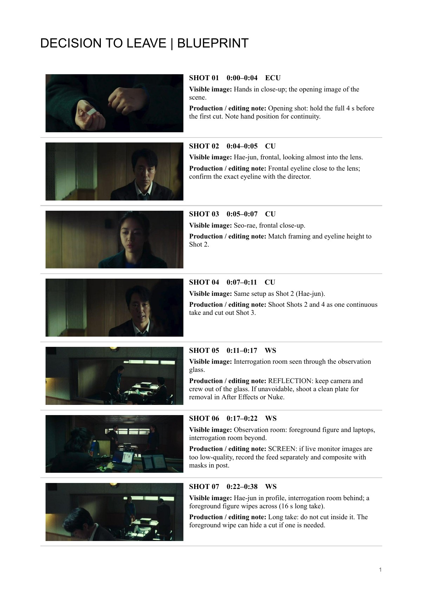
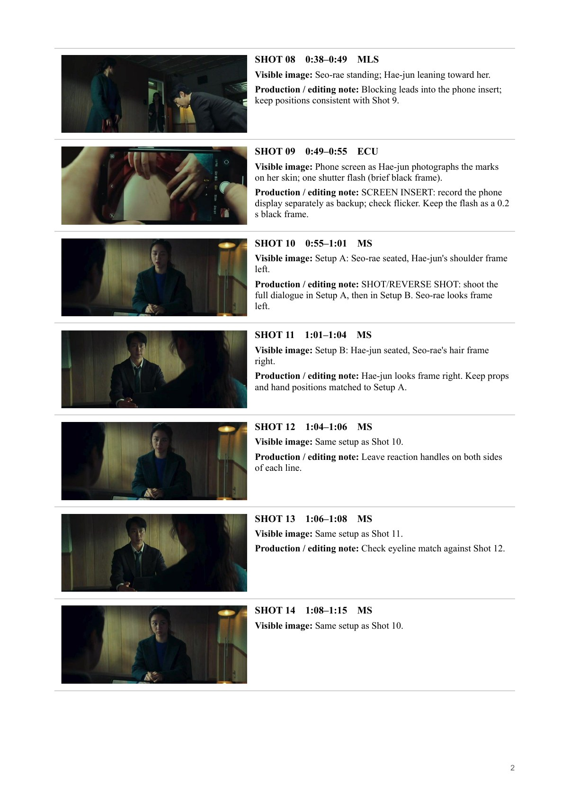
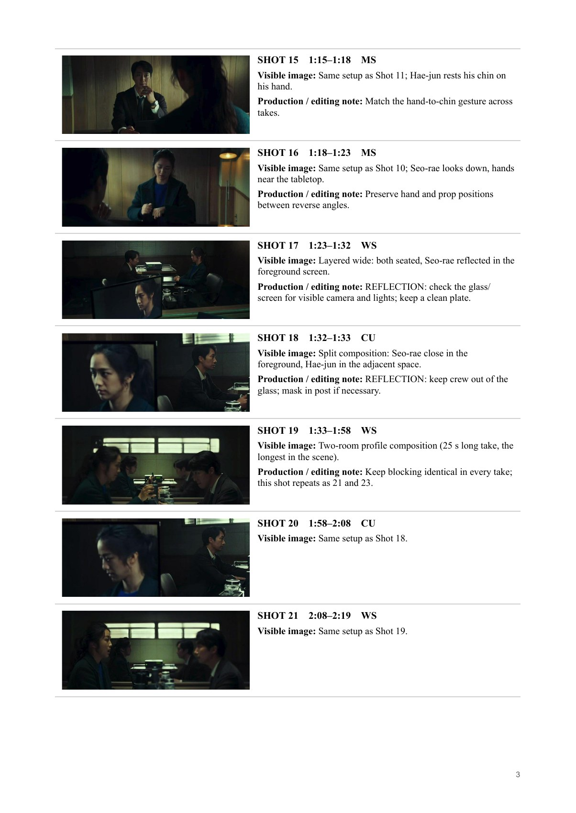
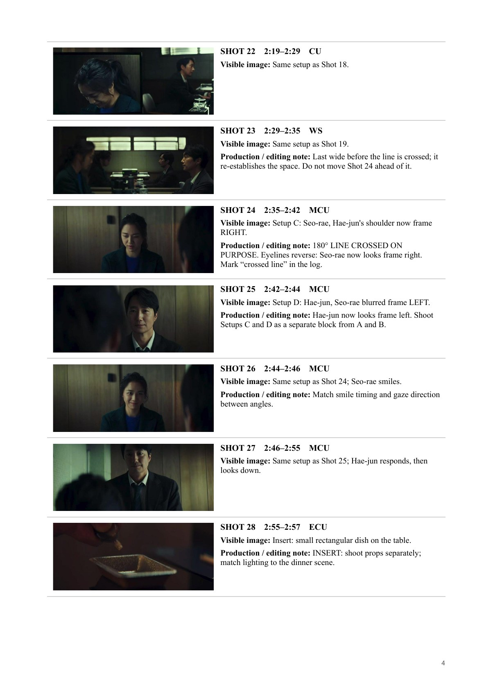
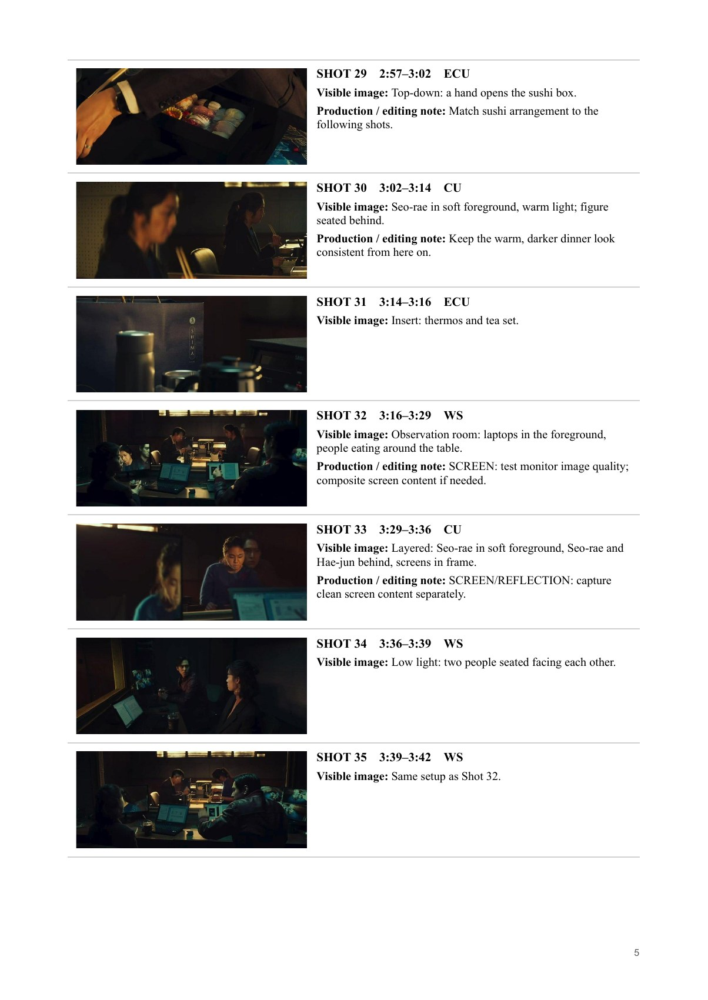
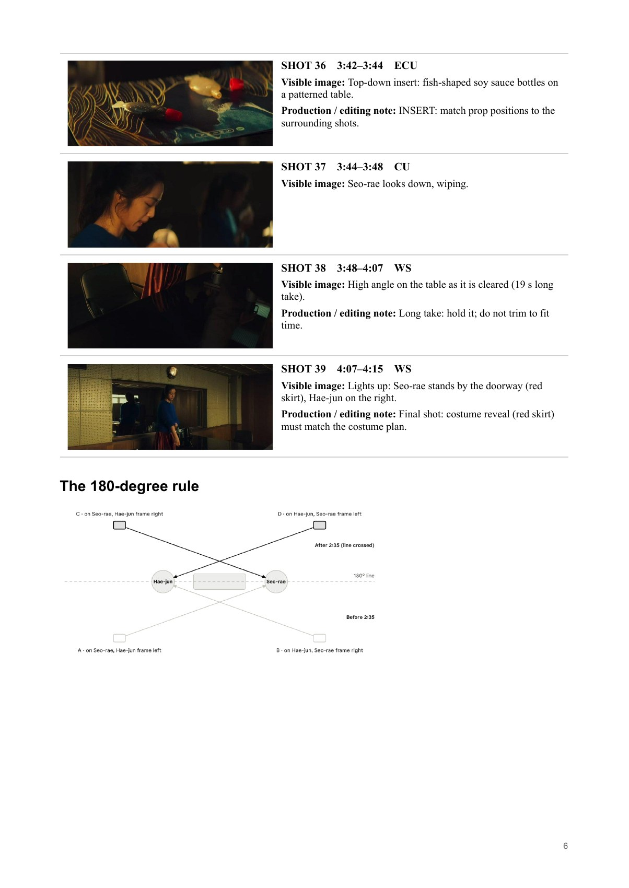
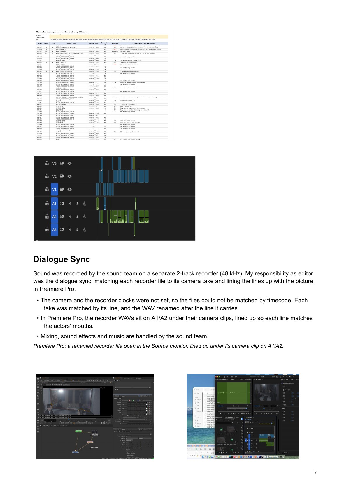
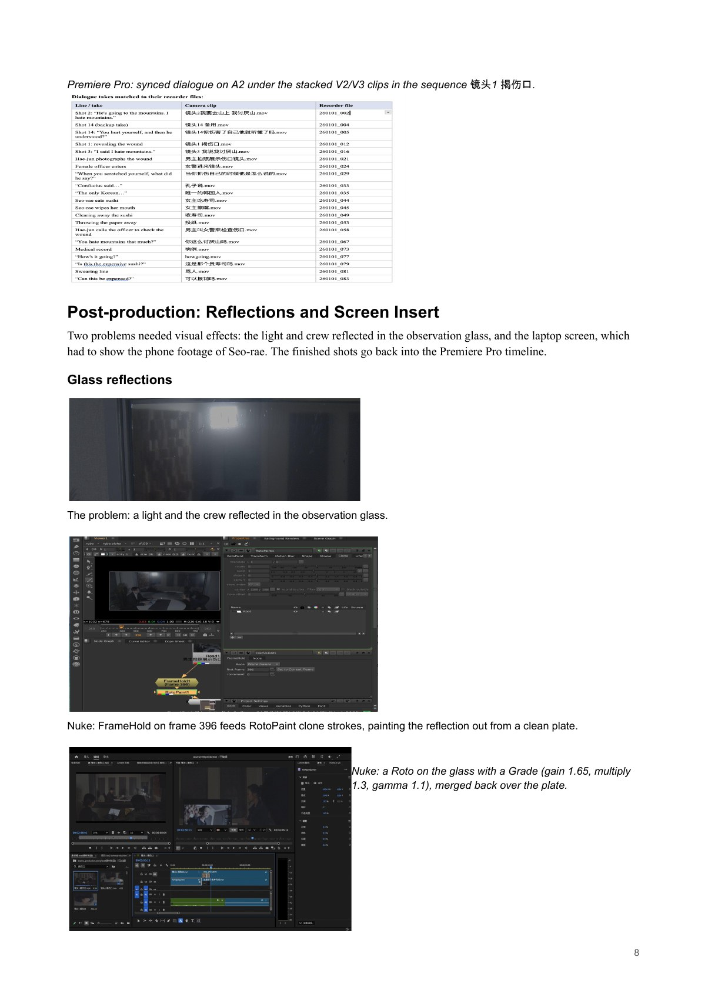
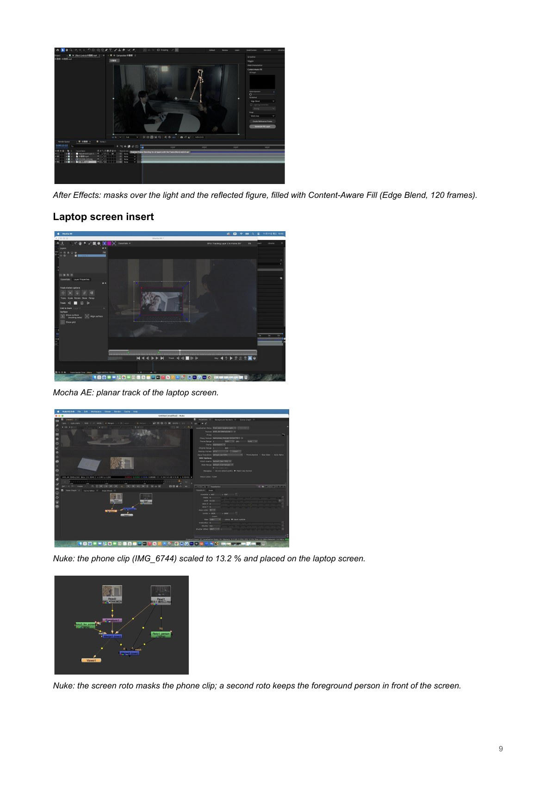

SCREEN PRODUCTION 2
Xinyue SunPortfolio
Film & editing
A semester of stories, sound and rhythm.
Films, editing experiments and reflections from Screen Production 2.


FILM · SOUND · RHYTHM · EXPERIMENT
WEEKLY CUTS
Weekly exercises
Films, storyboards and editing notes, week by week.
Assignments
MORE WORK
Other exercise
ASS2 / PRE-PRODUCTION
Pre-production documentation
Decision to Leave · Blueprint
Shot breakdown, continuity notes and production documentation · 9 pages

Page 1 / 9
Page 2 / 9
Page 3 / 9
Page 4 / 9
Page 5 / 9
Page 6 / 9
Page 7 / 9
Page 8 / 9
Page 9 / 9Scroll sideways to read all nine pages. Select a page to enlarge it.
This project aims to remake the interrogation room scene in Park Chan-wook’s film Decision to Leave (2022). As an editor, my goal is to remake the original work’s shot structure and visual style, and to explore how it builds a specific atmosphere through editing rhythm, character response, and color grading. Due to differences in language, performance style, and shooting conditions, complete reproduction isn’t realistic.
I first sorted out the camera order, scene layout, and character action, selected the most suitable materials, and edited them in Premiere Pro. The concept of Emotional Beats made me realize that editing is not only a simple stitching of the picture and the lens, but also the key to determining how the audience understands the emotional direction of the characters. The original work creates psychological tension through pauses, eye contact, and reaction shots. Because our remake is in English instead of Korean, the actors’ dialogue is faster, resulting in some scenes losing the slow and introverted emotional evolution in the original. This made me understand that the “faithful restoration” is not to mechanically copy every editing point, but to understand the emotional logic behind the editing.
At the shooting site, I thought that photographic equipment that was accidentally entered into the camera could be removed in post-processing, but I underestimated the complexity. When I repaired these shots in After Effects, there were still traces of processing. This reflects that I have little experience in compositing, rather than the limitations of the technology itself.
Due to the difference in the light between each lens, I colored each lens independently in Premiere Pro to ensure the consistency of the visual style. Referring to the transition from noon to evening, I gradually changed the tone from cold blue to warm yellow - which is not only an imitation, but also a technique to express the passage of time. However, some areas of the final picture are too dark, resulting in the loss of shadow details; this shows that I still have room for improvement in color balance and exposure control.
These experiences prompted me to rethink the relationship between shooting and post-production. On set, I once hoped to solve some problems later, but I could not fully achieve this goal. Although my professional skills are still being improved, before shooting, careful preparation, camera position arrangement, and inspection of light and visible elements in the picture should come first. I will still devote myself to improving compositing and color matching, and learn to predict the feasibility before shooting.
In general, this remake has deepened my understanding of editing: it is both a technical practice and an artistic expression. The editor’s responsibility is not only to sort out the materials, but also to convey emotions through the lens, sound, and color based on a deep understanding of the narrative intention of the original. In the future, I hope to continue to hone my post-production skills and participate more actively in the preliminary preparation work.